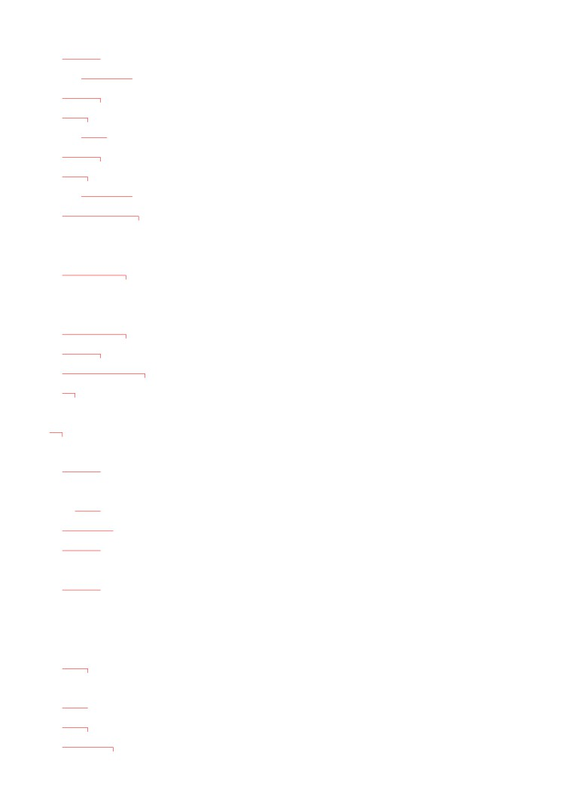
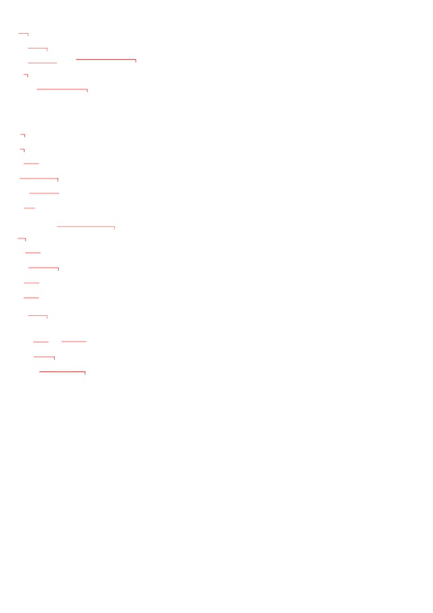
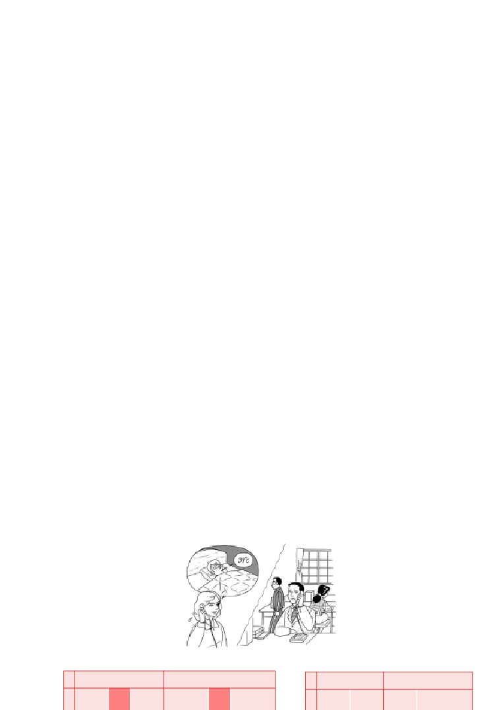
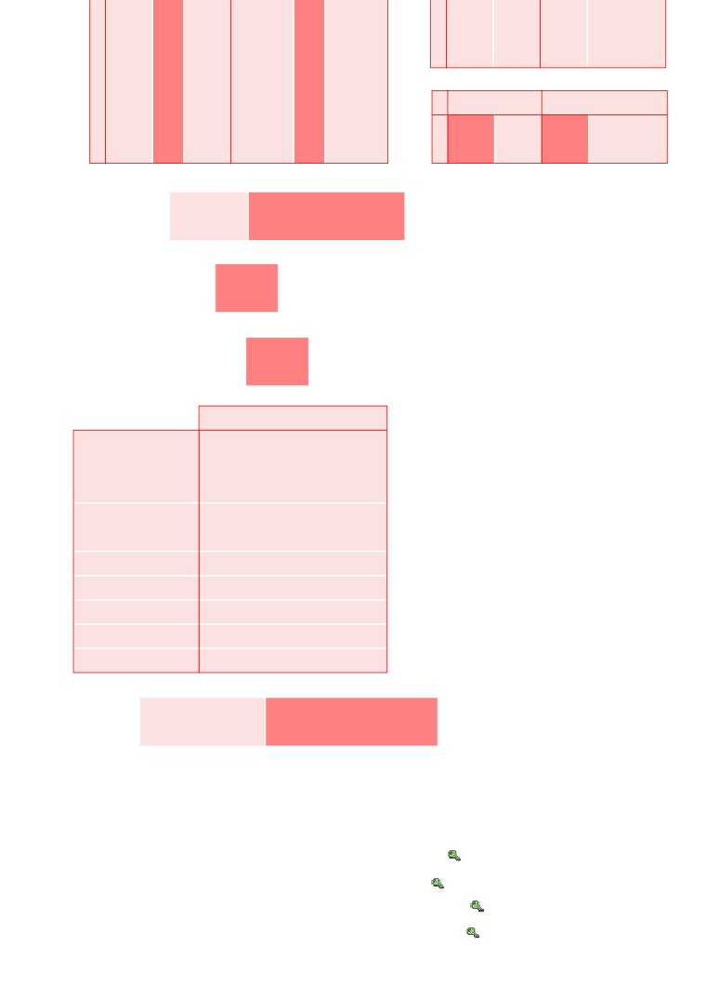
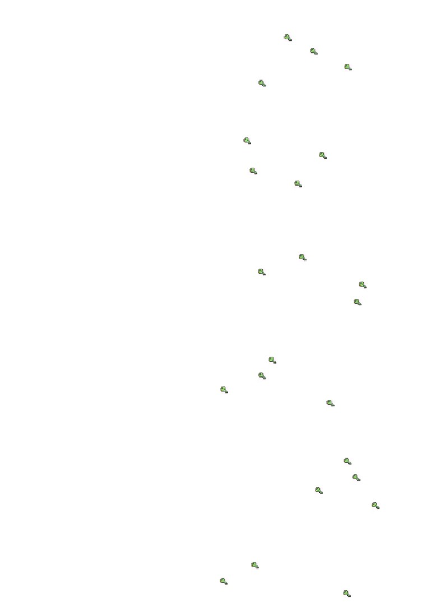
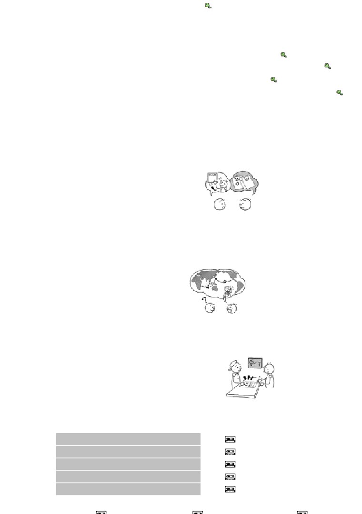
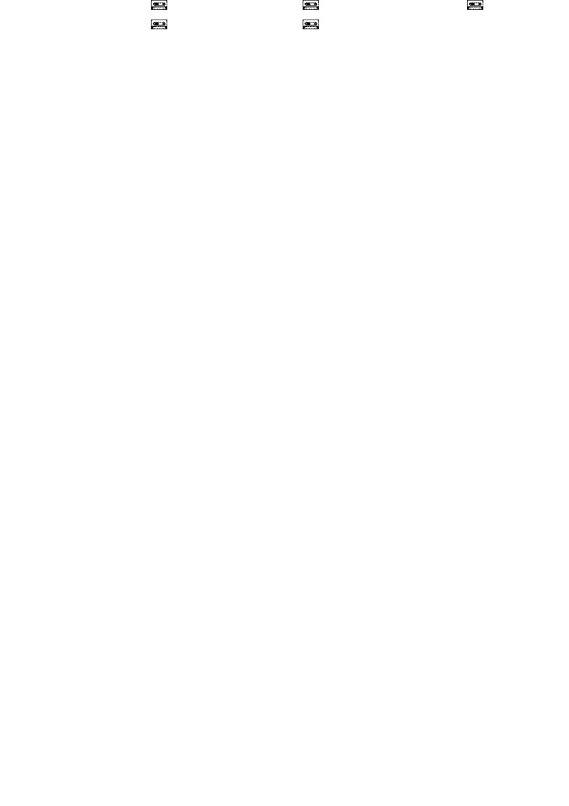
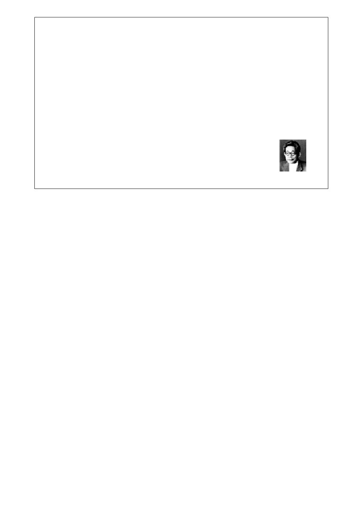
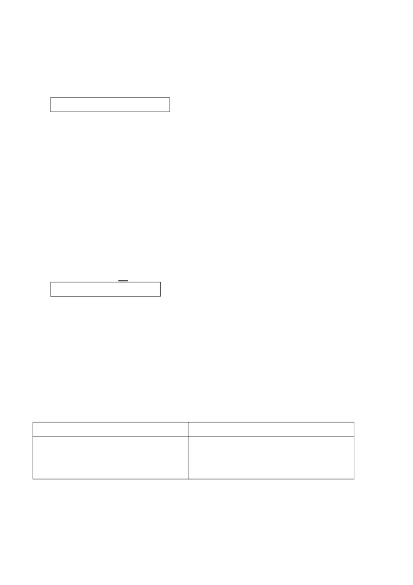

第４９課
課:49 (頁:1/10)
ことば
1.
つとめます
Ⅱ
勤めます
〔在公司
〕工作
［かいしゃに～］
［会社に～］
2. やすみます Ⅰ
休みます
睡覺
3.
かけます
Ⅱ
掛けます
坐〔
在椅子〕
上
［いすに～］
4. すごします Ⅰ
過ごします
度過，過
5.
よります
Ⅰ
寄ります
順路去〔
銀行〕
［ぎんこうに～］
［銀行に～］
6. いらっしゃいます
Ⅰ
在，來，去（います、いきます、き
ます的尊敬語）
7. めしあがります Ⅰ
召し上がります
吃，喝（たべます、のみます
的尊敬語）
8. おっしゃいます Ⅰ
說(いいます的尊敬)
9. なさいます Ⅰ
做(します的尊敬語）
10. ごらんに なります Ⅰ ご覧に なります
看（みます的尊敬語）
11. ごぞんじです
ご存じです
知道（しって います的尊敬語）
12. あいさつ
問候，寒暄（～を します：問候)
13. はいざら
灰皿
煙灰缸
14. りょかん
旅館
旅館
15. かいじょう
会場
會場
16. バスてい
バス停
公車站
17. ぼうえき
貿易
貿易
18. ～さま
～様
（～さん的尊敬語）
19. かえりに
帰りに
回來（去）的途中
20. たまに
偶而
21. ちっとも
一點也不（用於否定）
22. えんりょなく
遠慮なく
不客氣

かい わ
課:49 (頁:2/10)
会話
ねん くみ
…年…組
…年…班
では
那麼（じゃ的禮貌說法）
だ
ねつ
出します［熱を～］Ⅰ
發〔燒〕
つた
よろしく お伝え ください。
請代我問好。
しつ れい
失礼いたします
告辭了（しつれいします的謙遜話）
しょう がっ こう
※ひまわり小学校
向日葵小學（虛構的小學名）
よ
もの
…読み物………………………………………………………………………………………
こう し
講師
講師
おお
多くの～
很多的～
さく ひん
作品
作品
じゅ しょう
受賞します Ⅲ
獲獎
せ かい てき
世界的に
世界性
さっ か
作家
作家
～で いらっしゃいます Ⅰ
是（です的尊敬語）
ちょう なん
長男
長子
しょう がい
障害
障礙，障礙物
も
お持ちです
有（もつて います的尊敬說法）
さっ きょく
作曲
作曲
かつ どう
活動
活動，行動
それでは
那麼
おお え
けん ざぶ ろう
※大江 健三郎
大江健三郎（日本作家，1935～)
とう きょう だい がく
※東京大学
東京大學
ぶん がく しょう
※ノーべル文学賞
諾貝爾文學獎
………………………………………………………………………………………………
ぶん けい
文型
か ちょう
かえ
1. 課長は もう 帰られました。
しゃ ちょう
かえ
2. 社長は もう お帰りに なりました。
ぶ ちょう
しゅっちょう
3. 部長は アメリカヘ 出張なさいます。
ま
4. しばらく お待ち ください。
れい ぶん
例文
ほん
よ
1. この 本は 読まれましたか。
よ
…ええ、もう 読みました。
はい ざら
つか
2. すみません。 その 灰皿、お使いに なりますか。
つか
…いいえ、使いません。 どうぞ。

えい が
らん
課:49 (頁:3/10)
よく 映画を ご覧に なりますか。
3.
み
…いいえ。 でも、たまに テレビで 見ます。
お がわ
むす こ
だい がく
ごう かく
4.
小川さんの 息子さんが さくら大学に 合格したのを
ぞん
ご存じですか。
し
…いいえ、ちっとも 知りませんでした。
の
もの
なに
め
あ
5.
飲み物は 何を 召し上がりますか。
えん りょ
遠慮なく おっしゃって ください。
ねが
…じゃ、ビールを お願いします。
まつ もと ぶ ちょう
6.
松本部長は いらっしゃいますか。
へ や
はい
…ええ、こちらの お部屋です。 どうぞ お入り ください。
かい わ
会話
つた
よろしく お伝え ください
せん
せい
しょう がっ こう
先 生：
はい、ひまわり小学校です。
クララ：
おはよう ございます。
ねん くみ
はは
い とう せん せい
5年2組の ハンス・シュミットの 母ですが、伊藤先生は
いらっしゃいますか。
せん
せい
先 生：
まだなんですが……。
い とう せん せい
つた
クララ：
では、伊藤先生に 伝えて いただきたいんですが……。
せん
せい
なん
先 生：
はい、何でしょうか。
じつ
ねつ
だ
クララ：
実は ハンスが ゆうべ 熱を 出しまして、けさも まだ
さ
下がらないんです。
せん
せい
先 生：
それは いけませんね。
がっ こう
やす
せん せい
クララ：
それで きょうは 学校を 休ませますので、先生に よろしく
つた
お伝え ください。
せん
せい
だい じ
先 生：
わかりました。 どうぞ お大事に。
しつ れい
クララ：
失礼いたします。
れん しゅう
練習 Ａ
そん けい
そん けい
1.
尊敬
尊敬
Ⅰ
き
き
ます
き
か
れます
Ⅱ
かけ ます
かけ
られます

:49 (頁:4/10)
いそ
ぎ
ます
いそ
が
れます
で ます
で
よ
み
ます
よ
ま
れます
おき ます
おき
られます
よ
び
ます
よ
ば
れます
おり ます
おり
られます
かえ
り
ます
かえ
ら
れます
そん けい
あ
い
ます
あ
わ
れます
尊敬
ま
ち
ます
ま
た
れます
Ⅲ
き ます
こ られます
はな
し
ます
はな
さ
れます
し ます
さ れ ま す
い とう せん せい
2. 伊藤先生は
さっき
でかけられました。
あしたは
こられません。
しゃ ちょう
3.
社長は もう お
かえり
に なりました。
やすみ
4.
どうぞ こちらに お
かけ
ください。
はいり
そん けい ご
5.
尊敬語
いきます
いらっしゃいます
きます
います
たべます
めしあがります
のみます
いいます
おっしゃいます
しって います
ごぞんじです
みます
ごらんに なります
します
なさいます
くれます
くださいます
しゃ ちょう
かい ぎ しつ
6.
社長は
もう 会議室へ
いらっしゃいました。
ゴルフを
なさいます。
れん しゅう
練習 Ｂ
れい
しゃ ちょう
かえ
1. 例： 社長は もう 帰りました
しゃ ちょう
かえ
→ 社長は もう 帰られました。
ぶ ちょう
らい しゅう
しゅっちょう
1)
部長は 来週 インドヘ 出張します
→
か ちょう
し りょう
よ
2)
課長は もう 資料を 読みました →
しゃ ちょう
た
3)
社長は すばらしい うちを 建てました →
じ
けん きゅうしつ
き
4)
イーさんは 8時ごろ 研究室へ 来ます →
れい
かい ぎ
で
2.
例： きのうの 会議に 出ましたか（ はい ）

かい ぎ
で
課:49 (頁:5/10)
→ きのうの 会議に 出られましたか。
で
……はい、出ました。
はな み
い
1)
もう 花見に 行きましたか（ はい ）
→
なつ やす
と
しゅうかん
2)
どのくらい 夏休みを 取りますか（ 2週間 ） →
おお さか
ひ
こ
らいしゅう
にち よう び
3)
いつ 大阪に 引っ越ししますか（ 来週の 日曜日 ） →
さけ
4)
お酒を やめたんですか（ はい ） →
れい
せん せい
あたら
か
3.
例： 先生は 新しい パソコンを 買いました
せん せい
あたら
か
→ 先生は 新しい パソコンを お買いに なりました。
ぶ ちょう
す
1)
部長は たばこを 吸いません
→
りょう り
まつ もと ぶ ちょう
おく さま
つく
2)
この 料理は 松本部長の 奥様が 作りました →
ほん
しゃ ちょう
か
3)
この 本は 社長が 書きました →
かい ぎ
よ てい
ぶ ちょう
き
4)
会議の 予定は いつも 部長が 決めます →
れい
さ とう
あ
4.
例： いつ 佐藤さんに 会いましたか（ きのう ）
さ とう
あ
→ いつ 佐藤さんに お会いに なりましたか。
あ
……きのう 会いました。
てい
ば しょ
1)
バス停の 場所が わかりますか（ いいえ ） →
つか
2)
疲れましたか（ ええ、ちょっと ） →
にっ こう
ところ
と
ふる
りょ かん
3)
日光では どんな 所に 泊まりましたか（ 古い 旅館 ） →
かね
か
くう こう
なか
ぎん こう
4)
どちらで お金を 換えますか（ 空港の 中の 銀行 ） →
れい
つか
5.
例： この ボールペンを 使って ください
つか
→ この ボールペンを お使い ください。
あたら
じゅう しょ
し
1)
新しい
住所を 知らせて ください →
しゅうまつ
す
2)
いい 週末を 過ごして ください →
かえ
よ
3)
帰りに 寄って ください →
へ や
ばん ごう
かかり
もの
たし
4)
部屋の 番号は 係の 者に 確かめて ください →
れい
に ほん
ねん
6.
例： どのくらい 日本に いらっしゃいますか。（ 3年 ）
ねん
→ 3年 います。
りょ こう
ほっ かい どう
1)
どちらへ 旅行に いらっしゃいますか。（ 北海道 ） →
えい が
らん
2)
あの 映画は もう ご覧に なりましたか。（ はい ） →
さけ
め
あ
3)
お酒は 召し上がりますか。（ はい、たまに ） →
こ
な まえ
なん
はな こ
4)
お子さんの お名前は 何と おっしゃいますか。（ 花子 ） →
れい
た なか
き
7.
例： 田中さんは もう 来ましたか
た なか
→ 田中さんは もう いらっしゃいましたか。
まつ もと
1)
松本さんは どちらに いますか
→
おく さま
なに
の
2)
奥様は 何を 飲みますか →
しゃ ちょう
らい しゅう
ぼう ねん かい
し
3)
社長は 来週の 忘年会の ことを 知って いますか →

課:49 (頁:6/10)
4)
だれが あいさつを しますか →
れい
た なか
かいじょう
8.
例： 田中さんは もう パーティー会場へ いらっしゃいましたか。（ はい ）
おも
→ はい、もう いらっしゃったと 思います。
か ちょう
さけ
め
あ
1)
課長は お酒を 召し上がりますか。（ いいえ ）
→
ぶ ちょう
ちゅう ごく ご
はな
2)
部長は 中国語を お話しに なりますか。（ はい、たぶん ） →
せん せい
なん じ
こ
じ
3)
先生は 何時ごろ 来られますか。（ 2時ごろ ） →
た なか
がい
かい ぎ しつ
4)
田中さんは どちらに いらっしゃいますか。（ 3階の 会議室 ） →
れん しゅう
練習 Ｃ
かい しゃ
1. Ａ: 会社を やめられたそうですね。
Ｂ: ええ。
Ａ: いつ おやめに なったんですか。
げつ
Ｂ:
2か月まえに やめました。
あたら
し ごと
はじ
1) 新しい 仕事を 始めます
せん げつ
先月
た
2)
うちを 建てます
きょ ねん
去年
し ごと
なに
2. Ａ: お仕事は 何を なさって いますか。
かい しゃ いん
ぼう えき がい しゃ
つと
Ｂ: 会社員です。 貿易会社に 勤めて います。
きょう し
1) 教師
だい がく
ぶん がく
おし
大学で 文学を 教えます
2)
エンジニア
じ どう しゃ がい しゃ
くるま
自動車会社で 車の
せっ けい
設計を します
びょう いん
はじ
3. Ａ:
この 病院は 初めてですか。
Ｂ: はい。
じゅうしょ
な まえ
Ａ: じゃ、ここに ご住所と お名前を
か
お書き ください。
ほ けん しょう
だ
1)
保険証を 出します
ま
2) こちらで しばらく 待ちます
もん だい
問題
れい
きょう と
い
1.
1)
…例： はい、京都へ 行きます。
れい
で
2)
…例： いいえ、出かけませんでした。
れい
の
3)
…例： いいえ、飲みません。
れい
し
4)
…例： いいえ、知りません。
れい
とも だち
あ
5)
…例： 友達に 会います。

課:49 (頁:7/10)
2.
1)
( × )
2)
( × )
3)
( ○ )
4)
( ○ )
5)
( ○ )
れい
しゃ ちょう
なに
3. 例： 社長は 何か スポーツを （ されます ）か。
…ゴルフを します。
ぶ ちょう
おく さま
い
1)
部長の 奥様も ごいっしょに ゴルフに （ 行かれます ）か。
い
…ええ、たまに いっしょに 行きます。
せん せい
らい しゅう
こく さい かい ぎ
なん
はな
2)
先生は 来週の 国際会議で 何に ついて （ 話されます ）か。
に ほん
しょうらい
はな
…日本の 将来に ついて 話します。
か ちょう
なん じ
もど
3)
課長は 何時ごろ （ 戻られます ）か。
じ
もど
…3時ごろ 戻ります。
さま
なん さい
4)
おじい様は 何歳に （ なられます ）か。
さい
…ことし 82歳に なります。
れい
ほん
か
4. 例： この 本を 書いたのは だれですか。
けん きゅうしつ
せん せい
か
…わたしの 研究室の 先生が （ お書きに なりました ）。
くるま
よ
1)
車を 呼んだのは だれですか。
ぶ ちょう
よ
…部長が（ お呼びになりました ）。
りょう り
つく
2)
この 料理を 作ったのは だれですか。
ぶ ちょう
おく さま
つく
…部長の 奥様が（ お作りになりました ）。
かさ
わす
3)
この 傘を 忘れたのは だれですか。
い とう せん せい
わす
…伊藤先生が（ お忘れになりました ）。
あたら
せい ひん
な まえ
き
4)
新しい 製品の 名前を 決めたのは だれですか。
しゃ ちょう
き
…社長が（ お決めになりました ）。
れい
せん せい
こん ど
りょ こう
5. 例： 先生は 今度の 旅行に （ いらっしゃいます ）か。
い
…いいえ、わたしは 行きません。
ぶ ちょう
らん
1)
部長、けさの テレビの ニュースを （ ご覧になりました ）か。
み
…うん、見たよ。
せん せい
の
もの
なん
2)
先生、飲み物は 何に （ なさいます ）か。
…ビールに します。
か ちょう
ひと
ぞん
3)
課長、あの 人を （ ご存じです ）か。
し
…うん、知って いるよ。
せん せい
りょうしん
4)
先生の ご両親は どちらに （ いらっしゃいます ）か。
ほっ かい どう
…北海道に います。
れい
かかり
もの
き
き
ま
6. 例： 係の 者に 聞いて 来ますので、ちょっと （ お待ち ください ）。
みな さま
ま
かいじょう
はい
1)
皆様 お待たせしました。どうぞ 会場に（ お入りください ）。
くに
かえ
か ぞく
みな さま
つた
2)
お国へ 帰られたら、ご家族の 皆様に よろしく（ お伝えください ）。
しょ るい
な まえ
じゅう しょ
か
3)
すみませんが、この 書類に お名前と ご住所を（ お書きください ）。
か
すわ
4)
どうぞ そちらの いすに （ お掛けください （お座りください））。

こ
おし
課:49 (頁:8/10)
7.
子どもに 教えられた こと
こう し
おお え けん ざぶ ろう
おお え
ねん
え ひめ けん
きょうの 講師は 大江健三郎さんです。 大江さんは 1935年、愛媛県で
う
とう きょうだい がく
そつ ぎょう
おお
ぶん がく さく ひん
お生まれに なりました。 東京大学を 卒業され、多くの 文学作品を
か
ねん
ぶん がく しょう
じゅ しょう
お書きに なりました。 1994年には ノーベル文学賞を 受賞され、
せ かい てき
ゆう めい
さっ か
世界的に 有名な 作家で いらっしゃいます。
か ぞく
おく さま
にん
こ さま
ちょう なん
ご家族は 奥様 と 3人の お子様が いらっしゃいます。 ご長男の
ひかる
しょう がい
も
おん がく
す
さっきょく
光さんは 障害を お持ちですが、音楽が お好きで、作曲を して
おお え
ひかる
おん がく かつ どう
いらっしゃいます。 大江さんは 光さんの 音楽活動の
てつだ
ために、いろいろ 手伝って いらっしゃいます。
ひかる
おし
そして、光さんから 教えられた ことが たくさん
こ
あると おっしゃって います。 きょうは 「子どもに
おし
はなし
教えられた こと」に ついて お話を して
いただきます。
おお え せん せい
それでは 大江先生、どうぞ。
おお え
な まえ
せ かい じゅう
ひと
し
1)
（ ○ ）大江さんの 名前は 世界中の 人に 知られて います。
おお え
ほん
か
しょう
2)
（ ○ ）大江さんは すばらしい 本を 書いて、ノーベル賞を
もらいました。
ひかる
だい がく
おん がく
おし
3)
（ × ）光さんは 大学で 音楽を 教えて います。
はなし
こ
ぶん がく
4)
（ × ）きょうの お話は 「子どもと 文学」に ついてです。
文法
けい ご
１
敬語（敬語）
在第49課和第50課中要學習「けいご」。所謂「けいご」就是說話人對聽話人或
話題中的人表示敬意的語言現象。說話人在社會關係中，對應該表示敬意的人就
必須使用「けいご」。「けいご
」的使用由以下三個主要因素來決定。
(1)說話人的年齡或社會地位處於下方，要對上面的人表示敬意時使用「けいご」
。(2)初次見面時、說話人和聽話人的關係不親密時、要對聽話人表示敬意時用「
けいご」。(3)「ウチ-ソト」的關係也是在使用「けいご」時必須考慮的。「ウ
チ」是指家人、公司等自己所屬的集團，「ソト」則是指自己圈子外的人。說話
人向「ソトの ひと（外人）」陳述「ウチの ひと（內部的人）」的情況時，
將「ウチの ひと」視同說話人一樣。因此，即使「ウチの ひと」是地位高的
人也不能為了對那個人表示敬意而使用「けいご
」。
けい ご
２
. 「 敬語」的種類
「けいご」中有「そんけいご」（尊敬語）、「けんじょうご」（謙遜語）和「
ていねいご」（禮貌語）三種。我們在第49課中要學習「そんけいご」。
そん けい ご
３
尊敬語（尊敬語）

「そんけいご」是為了對聽話人及話中的人表示敬意，用於表達聽話人及話題中課:49 (頁:9/10)
人的行為及狀態。對所有物等可以視為屬於那個人的物體及人時均可使用。
1)動詞
(1)尊敬動詞 （參考進階Ⅱ本冊126頁第49課練習A1）
被動動詞的形式也可作為尊敬動詞用。屬於第二類動詞。
なか むら
じ
こ
①中村さんは ７ 時に 来られます。
中村先生 7點鐘會來。
さけ
②お酒を やめられたんですか。
您戒酒了嗎？
(2)
お動詞 ます 形 に なります
與使用(1)的尊敬動詞相比，用這個形式的敬意和禮貌程度都要更高一些。「み
ます」「ねます」等ます形的1音節動詞和第三類動詞不能用這個形式，另外，
(3)中提出的可以用特殊尊敬動詞替換的動詞就用特殊尊敬動詞形式。
しゃ ちょう
かえ
③社長は もう お 帰りに なりました。 總經理已經回去了。
(3)特殊尊敬語
（參考進階Ⅱ本冊126頁第49課練習A5）
有一些動詞有尊敬的意思，表示和(2)相同程度的敬意。
せん せい
けんきゅう しつ
④ワット 先生は 研究室に いらっしゃいます。 瓦特老師在研究室裡。
め
あ
⑤どうぞ 召し 上がって ください。
請用吧。
〔註〕「いらっしゃいます」「なさいます」「くださいます」「おっしゃいま
す」屬於第一類動詞，活用時除
ます形以外按
ら行變化。
せん せい
⑥ワット 先生は テニスを なさいますか。 瓦特老師打網球嗎？
おも
…いいえ、なさらないと 思います。
…不，我想他不打。
(4)
お動詞 ます 形 ください
是向對方請求、勸誘時表示敬意的句型。
はい
⑦あちらから お 入り ください。
請從那裡入內。
〔註〕(3)
的特殊動詞不能用這種形式，但是「めしあがります
」可用「おめし
あがり ください」﹑「ごらんに なります」可用「
ごらん ください」的形
式。
2)名詞、形容詞、副詞
除了動詞之外，部分名詞、形容詞和副詞在語頭加上「お」或者「ご」也可以成
為「そんけいご」。加「お」還是「ご」是由那個詞本身決定的。一般來說，「
お」加在日本固有的詞前面，「
ご」加在從中國語引進的詞前面。
加「お」的詞例：
加「ご」的詞例：
くに
な まえ
し ごと
か ぞく
い けん
りょ こう
（名詞） お国﹑お名前﹑お仕事
（名詞） ご家族﹑ご意見﹑ご旅行
げん き
じょうず
ひま
ねっ しん
しん せつ
（な形容詞）お元気﹑お上手﹑お暇
（な形容詞）ご熱心﹑ご親切
いそが
わか
じ ゆう
（い形容詞）お忙しい﹑お若い
（副詞） ご自由に
けい ご
４
. 「 敬語」和文體
「けいご」中也不只有禮貌形還有普通形。普通形用在句尾也就成了常體的句子。
在關係親密的人對話中，若話題中出現的人是應該表示敬意的人時，可使用這個
句子。
ぶ ちょう
なん じ
⑧部長は 何時に いらっしゃる？
經理什麼時候到？
５
句子的一貫性
課:49 (頁:10/10)
使用「けいご」的時候，句中的其他詞也要一致用敬語表達方式，使禮貌的程度
一致。
ぶ ちょう
おく さま
い
⑨部長の 奥様も ごいっしょに ゴルフに 行かれます。
經理夫人也一起去打高爾夫球。
⑨中為了讓句中的禮貌程度一致，將「
おくさん」「いっしょに」「いきます」
全部改變，用了「おくさま」「ごいっしょに」「いかれます
」。
６ . ～まして
在想禮貌地講話時可以將動詞て
形改成動詞 形まして。使用「
けいご」的句
子中，為了讓句中的禮貌程度一致，經常使用「～まして
」。
ねつ
だ
さ
⑩ハンスが ゆうべ 熱を 出しまして、けさも まだ 下がらないんです。
漢斯昨晚就發燒了，到今天早上還沒有退。